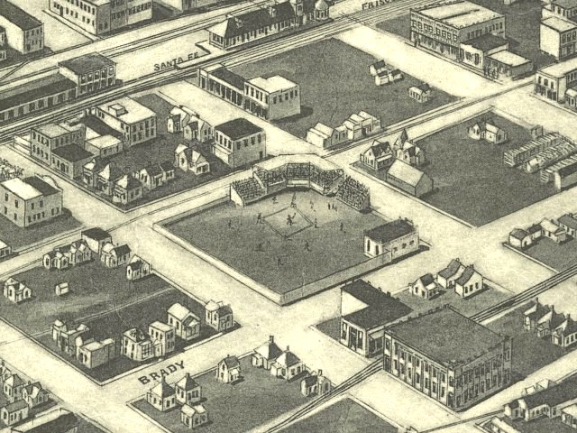

| Tulsa, Oklahoma - 1918 |
|---|
 |
| Aero view of Tulsa, Oklahoma, 1918. Fowler & Kelly. CREATED/PUBLISHED Pasaic [sic], N.J. : Fowler & Kelly, [1918] NOTES Bird's-eye view. "Copyright by Fowler & Kelly, 21 Elm St., Pasaic, N.J." Includes ill. of Municipal Building and index to public buildings. |